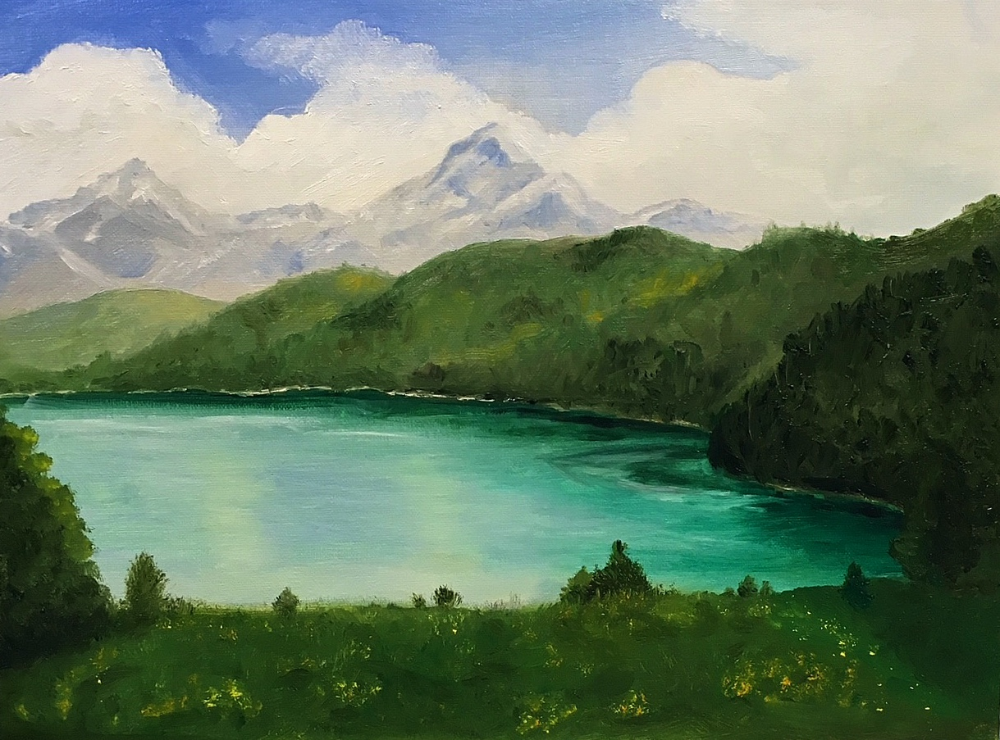

Alex Blaskovich
Daydreamer. Worrier. Creator.
When I worry, I daydream. When I daydream, I create. This is who I am. I am a bashful multimedia
artist, writer, and amateur developer. I strive for authenticity.
My Work
Physical |
Digital |
Projects
These works below reflect my spirit and soul. They are representative of what I can do. Not all of my pieces and projects are here, but these are my favorites.
Physical
These are my most recent works. They are either acrylic or oil mediums. The top
three are
painted on
blocks of wood that I recycled from my taekwondo black belt graduation. That's right, you
heard me.
The boards were broken by my foot and fist. Double the sentiment.
Series 1: Snow
This is the first of a three painting series based off of this little character.
His name is Sooch (pronounced like it looks!). Each painting has a different color
scheme and nature scene. I started with a basic sketch on the wood, and went layer
by layer. The paint soaked into the wood more than I expected, so I always put
down a heavy base coat before I added shading and details.
Series 1: Jungle
Ah, Sooch looks very happy here. I wanted to work with warmer and richer
colors for this second painting. The greens and details of the forest
were a lot of fun to work with. Look at his little hat! My ideas for
these paintings came straight out of my head, so the process of painting
this one is exactly like Snow.
Series 1: Desert
I started this one without a sketch. The paint simply flowed off
my brush. I wanted this vividness of the sunset to be as colorful
as the ones you witness from the Sonoran Desert. I also wanted to
portray the vast emptiness of the desert. The emptiness is beautiful.
Österreich
My first exposure to oil painting! It took hours upon hours. The scene did not come
from my imagination like the others. It was based off a photo a family member had
taken in Austria. My style is not as prominent in this one as it's based off nature,
but I'm proud of my effort. This was a learning experience. I learned that for oil
painting, I had to stand back every once and awhile to look at the canvas from a
distance. I was thrown off by this, as I'm very detail oriented, but this method
really assisted me in painting the mountains in the distance.

Digital
Tablet-drawn and parent approved.
Rochester and Irving in the Library
In 2017, I had a lofty goal to illustrate scenes for a book I was
writing about animals living in Victorian times. Sadly the book
never took off, but I was left with art from many potential scenes. I
first sketched it in my own writing journal and then traced over
it with my tablet. The colors are dark and rich, and I created
this little library for myself. In summer 2019, I recreated this
picture in oil paint. Detail work is much easier digitally than with
oil for me!
Ice Elves
Oh goodness, I'll admit it. I wrote Lord of the Rings fan-fiction back
in 2015. This was one of the many scenes I drew for my book published
online. I began with a brief sketch on my tablet before I started shading
and filling in colors. Since I don't normally draw people, the figures
(elves, my bad) were the hardest part to draw. Here they are traipsing
through snow in a mountain valley.
Icarus
My senior year literature class assigned a project where we had to
choose a Greek myth and create anything to portray the myth in a
different medium. I chose Icarus, the man with wax wings who flew
too close to the sun. I first drew his body on paper before I took
a picture of it and traced it on my tablet. I then filled in the
sky and ocean. His wings are black compared to his father (flying
beneath him) since he disobeyed orders and flew too close to the
sun, and he has a chain on his ankle. I attempted to hide lots of
symbolism in this rendition.
Projects
SpongeBob Museum Exhibit
I took Introduction to Interactive Media Design in Winter 2020. This project was a culmination of a quarter long discussion about designing an exhibit for the MoPop Museum in Seattle. It was a group project and working remotely made it difficult at the end of the quarter, but I organized meetings for us to continue collaborating. See below for a walkthrough of our SpongeBob exhibit!
These are my group's base concepts for our exhibit. We came up with a main audience, what the audience should take away after they visited, and goals of the whole experience. We wanted to mainly attract college aged kids who watched the show when they were younger. I was in charge of writing out descriptions and fleshing out the physical and digital elements of our exhibits. I also came up with images and visualizations of how the exhibit would look and feel. A brief example of the physical elements are shown below.
If curiosity strikes, go ahead and click here if you
want to take a peek
at our 15 page write-up. I developed deeper descriptions of digital aspects,
and there's expanded sections about interactive games and a map of our exhibit!
© Nickelodeon for usage of SpongeBob Characters
Gelidry
Winter 2020 was a busy time! I was apart of a Game Jam for UW Bothell's Game Development
Club.
The theme was ice and the game had to be finished in three months, so my team of 5 banded
together to create a visual novel game.
The story forces you to make decisions and choose based off your morals.
My group concepted many ideas and met frequently, and we all created the script
and story collaboratively. Amazingly each one of us specialized in something
different. I was in charge of background art (two pieces are shown above), one of my
teammates was in charge
of creating a soundtrack, one of character artwork, and two others teamed up with
UI and coded it in Unity. I'm really proud of what we acheived in such a short amount of
time!
Play it here! Gameplay lasts about 15
minutes.
The Journey Into Jon
My first taste of 3D animation. In Spring 2019, I took Introduction to Programming Through
Animation.
This project took 15 hours to animate. Those 15 hours were full of frustrations, overheating
laptops,
and lots of storyboarding. It was my final project and I won 5 categories of the "Oscars" my
class held,
as well as overall best film. Based off Garfield the cat, this story takes you on a twisted
journey
into the crazed mind of Jon, Garfield's owner. Very dark, very weird, with very old computer
graphics.
Take a look if you dare.
(Sidenote, the animation software wouldn't let me export my video without a fight, so
enjoy the lovely watermark)
Websites
This exact website you're on was coded by yours truly. I made it scroll organically,
and took every
header picture myself. Notice the pictures move as you scroll. Magic! If you look
close, you can see all the details I added. Like I said, I love adding details. It makes it
special and authentically me. This website took weeks to flesh out and code, and I wanted to
make sure it works on
mobile and on desktop. I also included links to my midterm and final site I coded for my
Introduction
to Web Development class.
UW Website
Final Site
About Me
Like I said, I live life authentically. I am me; a goofy, sarcastic
person who laughs a little too easily.
I currently work at UW Bothell's Writing and Communication Center as
a Lead Administrator and Peer Writing Consultant. I try my best to
create an easy, approachable environment where students and coworkers
can interact without fear of judgement. I love writing and this job
allows me to have an outlet.
My goal when I enter the workforce is to have a job where I can pour my
creativity into. I'm interested in UI, CGI animation, visual/graphic design,
web development, screen writing, and more. I want to work with a team who shares the same
passions and goals as I do. Positive collaboration is where I thrive.
My hobbies involve many things: writing, world-building, painting, sketching, gaming, and
collecting antique teacups. I also have an affinity for scented soaps and candles. I'm a
big family person and I love spending time with them, as well as my boyfriend.
Contact
Connect with me on LinkedIn!
Email Me!
... and if you were curious, my fan-fictions and other stories are posted on WattPad. Be warned it hasn't been updated since 2017.